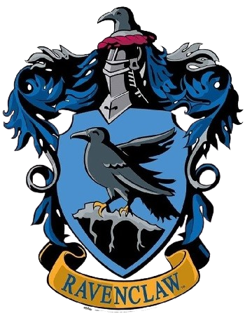

⮪ INICIO
RAVENCLAW
La casa de Ravenclaw fue fundada por Rowena Ravenclaw. Los
colores
de esta casa son el azul y el bronce, y el símbolo es un águila; su
reliquia es la diadema de Rowena Ravenclaw.
El jefe de la casa es Filius Flitwick
y su fantasma asociado es Helena Ravenclaw, también conocida como la Dama
Gris.
En
esta casa se buscan alumnos
que sean creativos, curiosos y que siempre buscan respuestas.